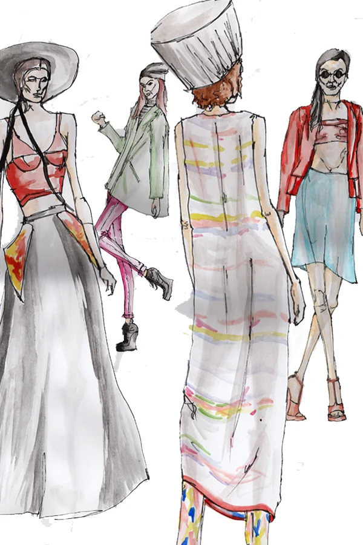
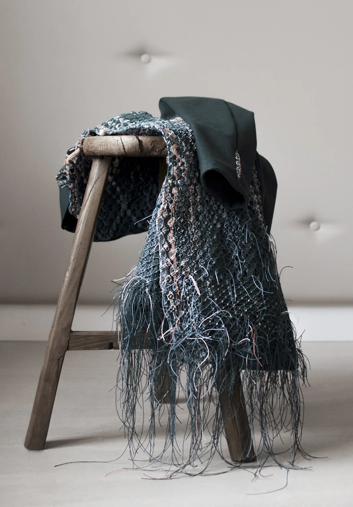

Nexio Fleet
Mobility · Brand & Product Design
Markenidentität und mobiles Produkterlebnis für ein Fleet-Management-Startup – von Discovery und Prototyping bis zur UX-Evaluation der veröffentlichten App.
AnsehenUX & Product Specialist
Ich mache Muster und Reibungspunkte im Nutzerverhalten sichtbar und übersetze sie mit Research und Design in konkrete Verbesserungen für digitale Produkte und Customer Journeys.
Markenidentität und mobiles Produkterlebnis für ein Fleet-Management-Startup – von Discovery und Prototyping bis zur UX-Evaluation der veröffentlichten App.
Ansehen
Weiterentwicklung des digitalen Markenerlebnisses über Website, UI-System und Marketing hinweg – mit klareren User Flows und wiederverwendbaren Design-Bausteinen.
Ansehen
Ein research-basiertes Redesign für Nebulite – mit verständlicherer Produktsuche, stärkerer Nutzenkommunikation und einem intuitiveren Einkaufserlebnis.
AnsehenWeitere digitale Produkte, visuelle Konzepte und Projekte aus meinem Weg als Designerin.
Entdecken


Eine Auswahl aus Editorial, Illustration, Branding und Fashion: als visuelle Basis meiner heutigen Arbeit an digitalen Produkten.
MehrMein Weg ins Design führte mich über Grafikdesign, Mode und Branding bis zu digitalen Produkten. Geblieben ist meine Neugier auf Menschen und darauf, wie sie mit den Dingen umgehen, die wir gestalten. Heute bringe ich diese Perspektive in UX- und Produktarbeit ein und verbinde User Insights, Design Thinking und Daten, um digitale Erlebnisse besser zu machen.
Über mich